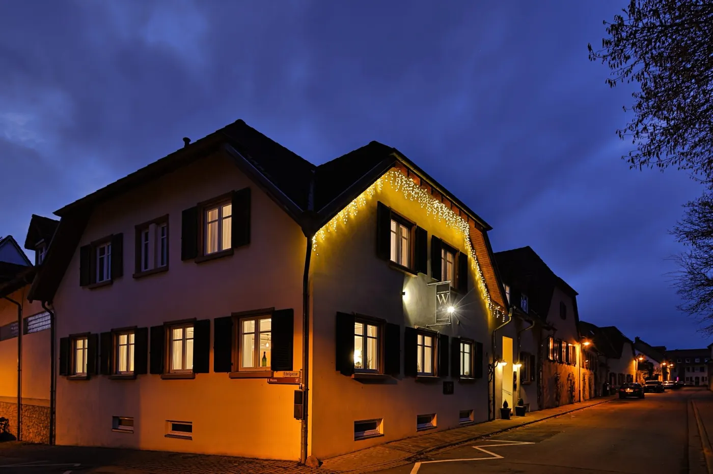

Farbwelt aus dem eigenen Haus
Eine Tagseite, eine Nachtseite.

Kalk#F4EFE7
Eiche#A9784F
Mokka#2A1D15
Aus der Vinothek: gekalkte Wände, Eichenbalken und Theke, dunkle Fliesen und Vorhänge der Zimmer. Grund der Seite, Text, Holz als zweiter Ton. Foto: doppelstueck.com.

Nacht#1F2552
Dämmerung#3A468E
Gold#C9A866
Vom Stammhaus zur blauen Stunde: Himmel gemessen (#3A468E), daraus die Nachtfläche; Gold aus der Folie der Wortmarke gemessen (#C9A866). Einzige Farbfläche der Seite, nur fürs Hotel und den Abend. Foto: doppelstueck.com.